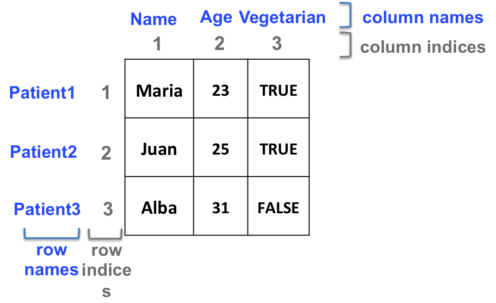
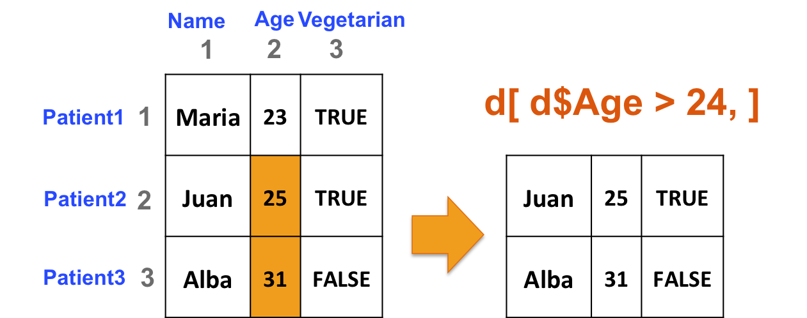
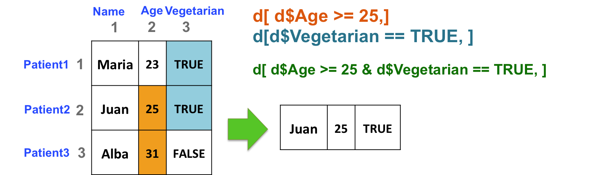

9.7 Two-dimensional structures manipulation
9.7.1 Dimensions
- Get the number of rows and the number of columns:
# Create a data frame
d <- data.frame(c("Maria", "Juan", "Alba"),
c(23, 25, 31),
c(TRUE, TRUE, FALSE),
stringsAsFactors = FALSE)
# number of rows
nrow(d)## [1] 3## [1] 3- Check the dimensions of the object: both number of rows and number of columns:
## [1] 3 3- Dimension names
Column and/or row names can be added to matrices and data frames
Column and/or row names can be used to retrieve elements or sets of elements from a 2-dimensional object:

## [1] "Maria" "Juan" "Alba"## [1] "Maria" "Juan" "Alba"## [1] 31## [1] 31# for data frames only, the $ sign can be used to retrieve columns:
# d$Name is d[,1] is d[, "Name"]- Include names as you create objects:
- Matrix:
+ Data frame:9.7.2 Manipulation
Same principle as vectors… but in 2 dimensions!
Examples
- select the columns of b if at least one element in the 3rd row is less than or equal to 4:
## [1] 34 4## [1] FALSE TRUE## [1] 44 12 4- Select rows of b if at least one element in column 2 is greater than 24:
# build data frame d
d <- data.frame(Name=c("Maria", "Juan", "Alba"),
Age=c(23, 25, 31),
Vegetarian=c(TRUE, TRUE, FALSE),
stringsAsFactors = FALSE)
rownames(d) <- c("Patient1", "Patient2", "Patient3")
# The following commands all output the same result:
d[d[,2] > 24, ]## Name Age Vegetarian
## Patient2 Juan 25 TRUE
## Patient3 Alba 31 FALSE## Name Age Vegetarian
## Patient2 Juan 25 TRUE
## Patient3 Alba 31 FALSE## Name Age Vegetarian
## Patient2 Juan 25 TRUE
## Patient3 Alba 31 FALSE
- Select patients (rows) based on 2 criteria: age of the patient (column 2) should be great than or equal to 25, and the patient should be vegetarian (column 3):
## Name Age Vegetarian
## Patient2 Juan 25 TRUE
More useful commands
- Add a row or a column with rbind and cbind, respectively
## Name Age Vegetarian 1:3
## Patient1 Maria 23 TRUE 1
## Patient2 Juan 25 TRUE 2
## Patient3 Alba 31 FALSE 3## Name Age Vegetarian
## Patient1 Maria 23 1
## Patient2 Juan 25 1
## Patient3 Alba 31 0
## 4 4 5 6Add a patient to our data frame d:
- Process the sum of all rows or all columns with rowSums and colSums, respectively.
## [1] 34 38 42 46 50## [1] 15 40 65 90- The apply function
Powerful tool to apply a command to all rows or all columns of a data frame or a matrix.
For example, instead of calculating the sum of each row, you might be interested in calculating the median ? But rowMedians doesn’t exist !
apply takes 3 arguments:
- first argument X: 2-dimensional object
- second argument MARGIN: apply by row or by column?
+ 1: by row
+ 2: by column
- third argument FUN: function to apply to either rows or columns
## [1] 8.5 9.5 10.5 11.5 12.5## [1] 3 8 13 18